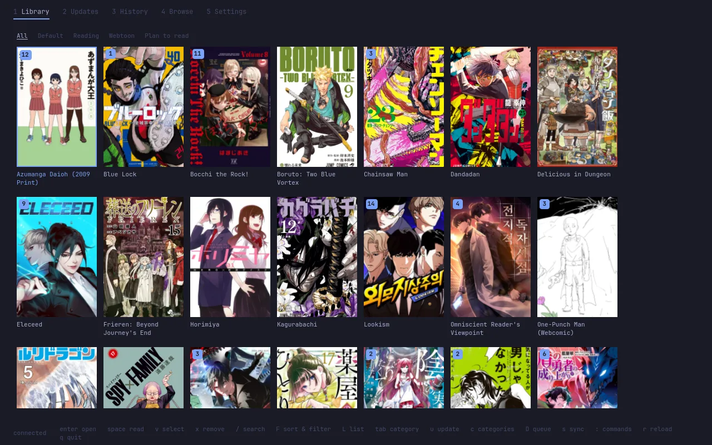
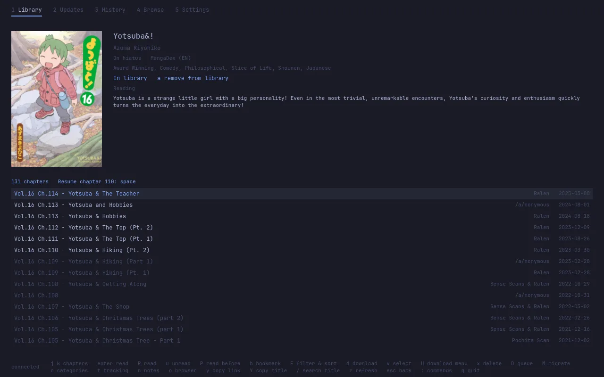
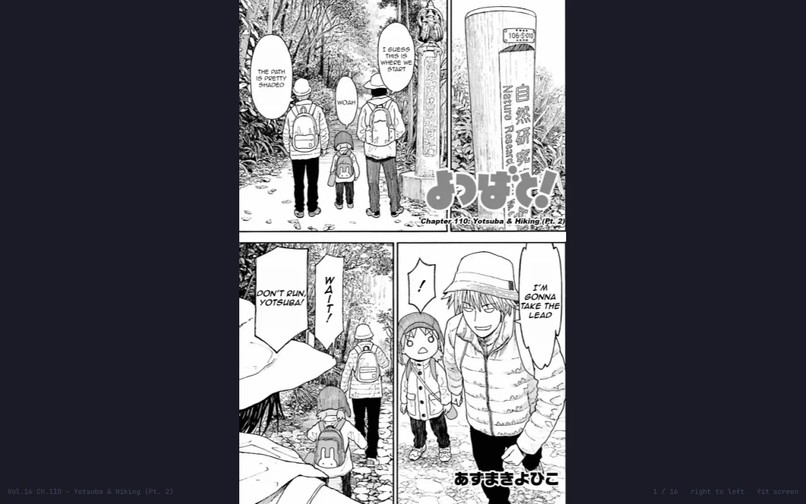
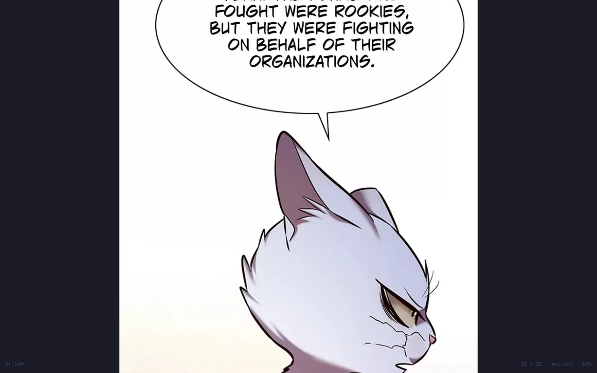
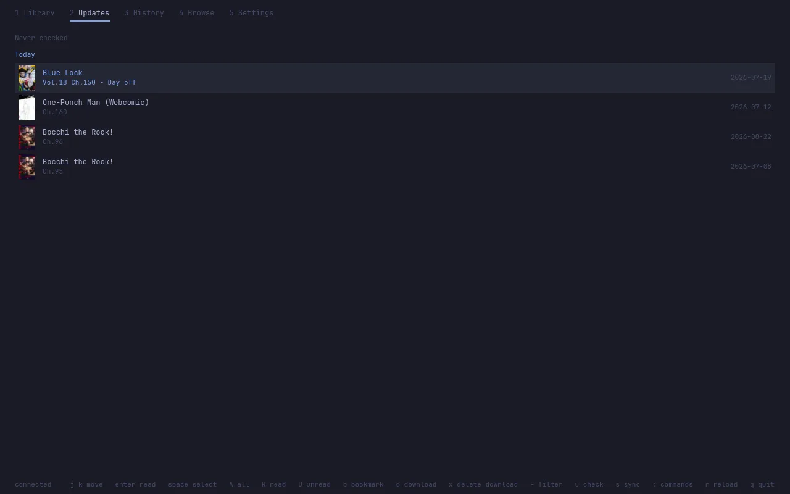
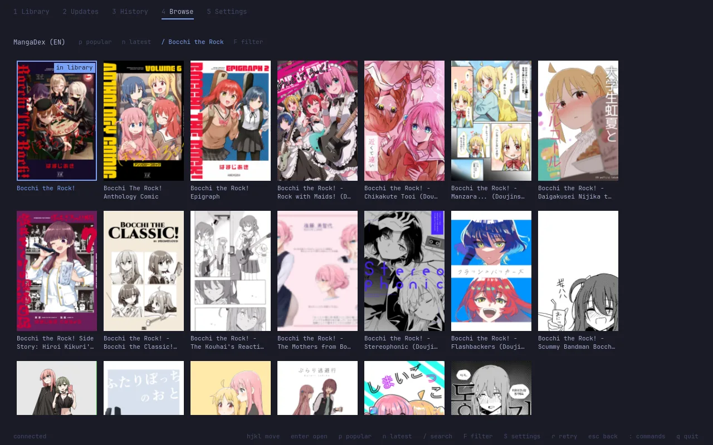

Miharchy
A keyboard-first manga reader for Omarchy. Mihon's extensions on the desktop, your library synced with Mihon on your phone.
omarchy plugin add https://github.com/Aweiward/miharchy --enable
Side A · the window
Your library, one key away
A Quickshell window that follows your Omarchy theme. Every view below is a real capture of Miharchy on a scratch server, in the Tokyo Night theme. Select a capture to open it full size.












Side B · the bar
New chapters in the bar
The mark and its popup are the real plugin/Mark.qml, rendered offscreen. The bar around them (workspaces, clock, tray) and the popup's frame are stand-ins drawn for this picture, not a desktop capture.
- The mark counts unread updates and checks once a minute.
- Left click lists the new chapters. Enter opens one in the reader.
- Middle click or w opens the window.
- s syncs with your phone; the burst turns green while it runs.
- A notification tells you when new chapters land.
Bonus track · the peek
One key, over anything
Press Super + M while you work. Miharchy slides in over the workspace you are on, on the next chapter to read. Press it again and it slides away. Only a tiling desktop can do this: Mihon is on your phone, Suwayomi is in a browser tab.
You, working
A terminal, an editor, a browser. Nothing moves.
Super + M
Setup adds the bind to your Hyprland bindings, once.
The peek
The reader, on the next chapter of the manga you read last.
- The same key, or a workspace switch, hides the peek. It comes back on the page you left.
- The next chapter comes from your read state, so a chapter you finished on the phone counts after a sync.
- A window you already placed on a workspace stays there: the key brings it up and resumes.
- Nothing left to read? The peek opens your Library with its search.
Dubbing · phone ⇄ desktop
Syncs with Mihon
Stock Mihon on the phone, no fork, no account. The two meet in a folder you already sync, through Mihon's own backup files.
Mihon
Automatic backups, and Restore backup for the file Miharchy writes.
.tachibk files
Shared by Syncthing or any folder sync. Miharchy keeps its newest three.
Miharchy
A three-way merge of library, categories, read state and tracks.
- Turn on automatic backups in Mihon, and share that folder with the desktop.
- Press s in the window or the bar popup. Miharchy merges the newest phone backup and writes
miharchy-<time>.tachibk. - Restore that file in Mihon. Anything a restore cannot apply, such as a manga you removed, is listed after the sync.
Specs
What's on the tape
Keyboard first
vim keys everywhere, and : opens a palette of every command.
Mouse too
Click, double-click, scroll and tap zones in the reader. Hints are buttons.
Five reading modes
Paged both ways, vertical, webtoon and continuous. Two-page spreads, page fit, split wide pages.
Mihon's extensions
Install from extension repos, search one source or all of them, set source filters and settings.
Trackers
Log in to the trackers Suwayomi offers. Progress goes out when you finish a chapter.
Local manga
Point it at a folder of chapters or CBZ files and read them like any source.
Downloads
A queue you can reorder, CBZ, auto-download of new chapters, delete after reading.
Backups and restore
Write and restore Mihon-format backups, by hand or on a schedule.
Incognito mode
Read without saving progress or history, and nothing goes to trackers. Downloaded-only mode for offline days.
Migrate
Move a manga to another source with its read state, categories and tracks.
Library tools
Categories, sorts, filters, selection and bulk actions, history with search.
Your Omarchy theme
Colors and fonts follow the active theme, live.
Install
One command, then Setup
omarchy plugin add https://github.com/Aweiward/miharchy --enableThis adds the mark to the bar. Middle click it to open the window. The first time, the window opens on Setup. Move with j and k, press Enter on a step, and y to run it. Setup never runs sudo: it shows the command for you to run.
- Java
sudo pacman -S jdk-openjdk - Suwayomi-Server
yay -S suwayomi-server-bin - Qt WebSockets
sudo pacman -S qt6-websockets - ServerA local user service on 127.0.0.1, with its own password.
- FlareSolverrOptional, for Cloudflare sources (Docker).
- Sync folderThe folder Mihon and Miharchy share.
- Sync helperBuilds the sync helper once, a few minutes.
- App launcher entryMiharchy in Super + Space.
- Peek keySuper + M shows and hides the peek.
Update with omarchy plugin update miharchy, then omarchy-restart-shell so the bar runs the new code. The README has the details and how to uninstall.